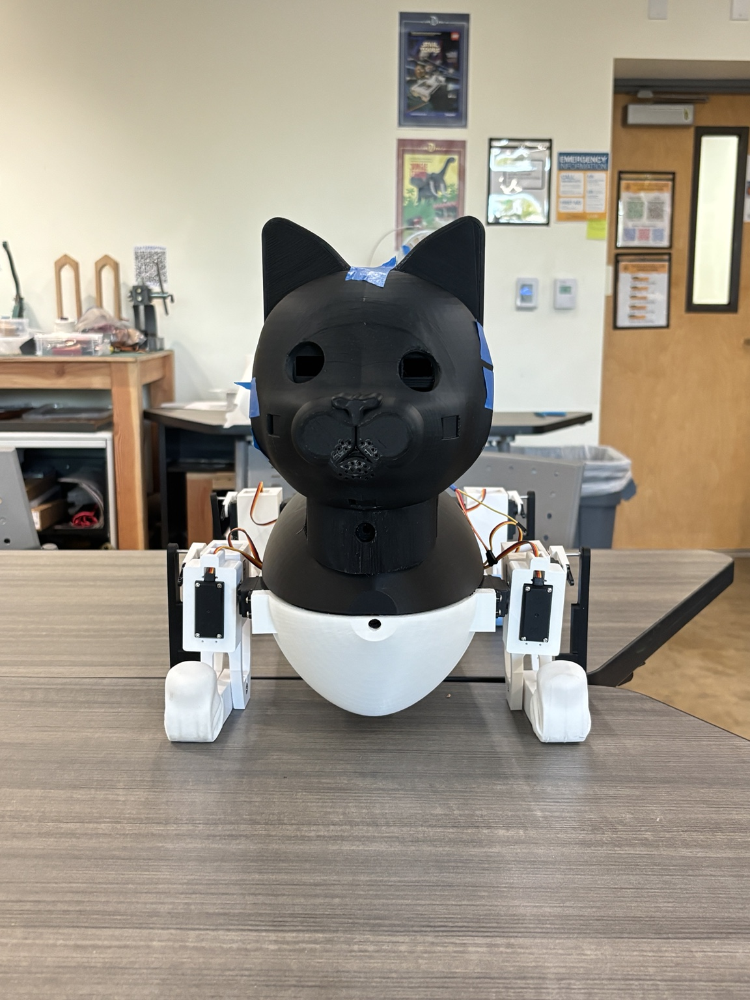

01
Mechanical Prototype
A physical body and leg structure created to explore form, assembly, and movement.
Student-Built Robotics
Project KE brings students together to explore mechanical design, electronics, software, simulation, and autonomous control through one ambitious hands-on robotics platform.
Prototype 2 recruitment is open

About
Project KE is a student-led effort to design and build a robotic cat from the ground up. The project creates a shared platform where ideas from different fields become one working system—from the frame and articulated legs to custom electronics, control software, and intelligent behavior.
We learn by designing, building, testing, and improving together.
Built, Tested, Learned
Prototype 1 turned the idea of Project KE into a physical system. Through early mechanical construction, actuated leg testing, electronics integration, and NVIDIA Jetson connection testing, the team established a foundation for the next stage of development.
A physical body and leg structure created to explore form, assembly, and movement.
Early movement demonstrations helped the team evaluate actuation and learn how the structure behaves.
Electronics and Jetson connection testing brought hardware and computing together for future control development.
Prototype 1 Gallery
The Next Build
Prototype 2 will build on what we learned and push Project KE toward a more capable, integrated, and autonomous robotic platform.
Design a stronger frame and more refined leg mechanisms for improved movement, stability, and serviceability.
Expand simulation environments to train, test, and evaluate models before transferring them to the physical robot.
Develop custom PCB solutions that organize power, sensing, communication, and control into a cleaner integrated system.
Build the software that connects perception, decision-making, electronics, and motion.
Prototype 2 Vision

All Majors Welcome
You do not need to be a robotics expert to contribute. Whether you are interested in mechanical design, electronics, PCB design, programming, AI, simulation, project coordination, media, design, documentation, or simply learning something new, there is room to make an impact.
Bring your curiosity. We will build the experience together.